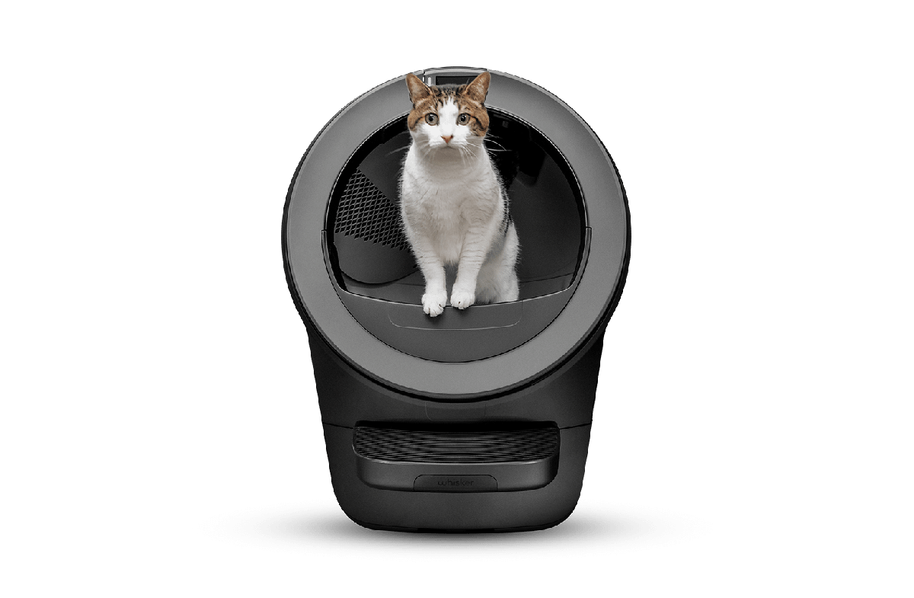
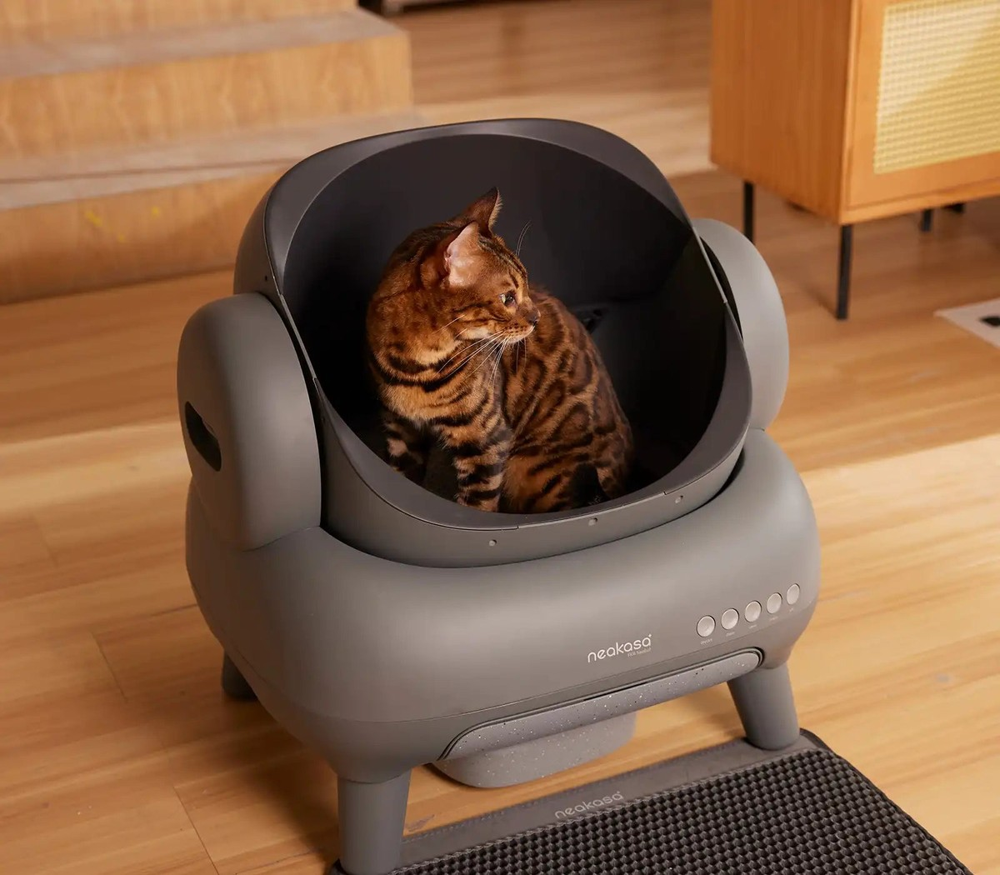
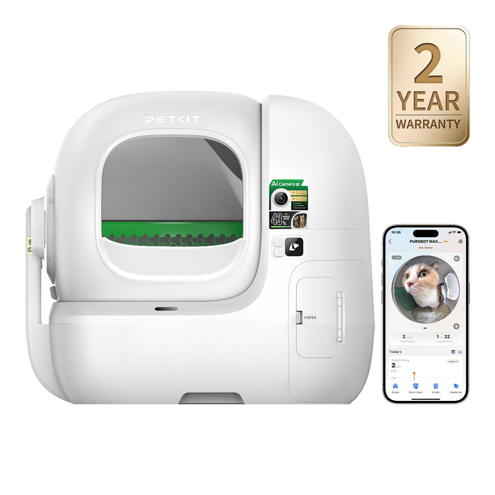

Best Automatic Litter Box (2026): Self-Cleaning & Smart Models Compared
Whether you call it an automatic, self-cleaning, or smart litter box, choosing the right hands-free appliance requires looking past promotional claims. We compile and organize manufacturer specifications across entry dimensions, waste bin capacities, and safety sensor architectures.
Top Recommendations at a Glance

Litter-Robot 5
Enclosed rotating globe with wide 15.75" opening, multiple laser and weight sensor layers, supporting up to 5 cats. Benchmark standard.

Neakasa M1
Open-top sifting basin for cats that refuse enclosed drums. Low entry, large 11.23L bin capacity, and 2.2–33 lbs weight range.

PETKIT Max Pro 2
Whisper-quiet rotating cylinder with integrated AI camera, 12 safety sensors, and low 10.03" step-in height.
1. The 3 Primary Operating Architectures Explained
While marketed under various names—automatic, self-cleaning, or smart—nearly all modern motorized cat litter boxes rely on one of three structural mechanisms:
The entire cylindrical chamber rotates on a motorized gear track. Gravity pulls clean litter through a sifting screen, while solid waste falls through a trapdoor into a bottom collection drawer before the drum reverses to level the bed.
Rather than an enclosed sphere, these units feature an open-top basin. A curved sifting mechanism sweeps through the basin, separating waste into a rear or side compartment without closing off the cat's field of view.
A comb or rake travels horizontally across a flat litter bed, pushing waste into a covered trap at one end. Paired with crystal or non-clumping silica litter.
Models Compared (3 Architectural Approaches)
| Model & Brand | Design Architecture | Entry & Cat Weight | Waste Bin & Noise | Price Tier | Action |
|---|---|---|---|---|---|
|
WHISKER • BENCHMARK
Litter-Robot 5
|
Enclosed Rotating Globe | 15.75" x 15.75" (3–30 lbs) | Up to 10 days (dB not stated) | As low as $799 | Check on Amazon |
|
NEAKASA • PARTNER
Neakasa M1 (US listing: M1 Plus)
|
Open-Top Sifting Basin | Entry height 13.86" (2.2–33 lbs) | 11.23L bin (50 dB) | $379.99 (M1 Plus)* | Check on Amazon |
|
PETKIT • PARTNER
PETKIT Purobot Max Pro 2
|
Rotating Cylinder | 10.51 x 10.74 in (3.3–22 lbs) | 8L bin (35 dB) | $499.99 sale | Check on Amazon |
2. Detailed Specification Comparison Matrix (3 Models)
Compiled from manufacturer technical publications read on Oct 9, 2026.
| Specification | Litter-Robot 5 (Whisker) | Neakasa M1 (US listing: M1 Plus) | PETKIT Purobot Max Pro 2 (PETKIT) |
|---|---|---|---|
| Design Form Factor | Enclosed Rotating Globe | Open-Top Sifting Basin | Enclosed Rotating Cylinder |
| Entry / Opening Dimensions | 15.75" x 15.75" | Entry height 13.86"; width/depth not stated | 10.51 x 10.74 in; entrance height 10.03 in |
| Stated Cat Weight Limits | 3–30 lbs, up to 5 cats | 2.2–33 lbs | 3.3–22 lbs |
| Waste Bin Capacity | Up to 10 days (one cat); volume not stated | 11.23L bin; about 14 days for one cat | 8L bin; up to 17 days (one cat) |
| Safety Sensor Architecture | Multiple lasers + weight sensor technology (Class 1 laser product) | Infrared + 4 weight sensors* | 12 integrated safety sensors |
| Stated Sound Level (dB) | Not stated by manufacturer* | 50 dB | 35 dB |
| Manufacturer Warranty | 1 year included; optional 3-year plan listed at $149 | US/Canada: 1-year limited; EU/UK: 2-year | 2 years (from image alt text; terms not on page) |
| Exterior Footprint / Dimensions | 22" x 27" footprint, 29.9" high; 28.7 lbs empty | Not stated by manufacturer (22.81 lbs empty) | 25.86 x 21.18 x 23.74 in |
| Starting Pricing | As low as $799 (Litter-Robot 5 Pro: as low as $899, adds dual camera) | $379.99 (M1 Plus)* | $499.99 sale (regular $599.99) |
| Specification Profile | View LR5 Specs → | View M1 Specs → | View Max Pro 2 → |
| Action Button | Check on Amazon | Check on Amazon | Check on Amazon |
Primary Manufacturer Source Links:
- Whisker: Whisker Litter-Robot 5 Official Product Page
- Neakasa: Neakasa M1 Official Product Page
- PETKIT: PETKIT Purobot Max Pro 2 Official Product Page
Verification & Notes: Specs read from manufacturer pages on Oct 9, 2026.
• Neakasa M1 Price: The US listing read was the M1 Plus at $379.99 (regular $549.99); standard M1 price not shown.
• Neakasa M1 Sensors: Infrared count inconsistent on manufacturer page (5 vs 6 sets).
• Litter-Robot 5 Sound: dB not stated by manufacturer; page notes QuietSift technology minimizes noise.
Affiliate Disclosure: Links to Neakasa and PETKIT are partner links that may earn an affiliate commission at no additional cost to you. Litter-Robot 5 is included strictly as an uncompensated reference standard.
3. How to Choose: Key Selection Criteria
Entry Opening & Weight Limits
Compare published entry dimensions (ranging from 10.51" x 10.74" on rotating cylinders to 15.75" x 15.75" on rotating globes) against manufacturer cat weight ratings.
Anti-Pinch & Presence Sensors
Check that the model incorporates multiple redundant sensing layers—such as infrared entry curtains and base weight sensors—with an automatic motor cutoff if a cat enters during a cleaning cycle.
Waste Drawer Seal & Odor Control
A sealed waste drawer is designed to isolate waste between emptying intervals.
Litter Compatibility & Consumables
Most rotating drums require standard clumping clay litter. Review manufacturer guidelines regarding waste bin liners and litter formula compatibility.
4. Highlighted Models & Architectural Deep Dives
Below are technical profiles for the three compared models, summarizing published specifications from manufacturer product pages.
Litter-Robot 5
| Architecture Type | Enclosed Rotating Globe |
| Entry Opening | 15.75" x 15.75" |
| Cat Weight Limit | 3–30 lbs, up to 5 cats |
| Waste Drawer | Up to 10 days (one cat); volume not stated |
| Sensor System | Multiple lasers + weight sensor technology (Class 1 laser product) |
| Sound Level | Not stated by manufacturer (QuietSift) |
| Dimensions | 22" x 27" footprint, 29.9" high; 28.7 lbs empty |
| Starting Price | As low as $799 (LR5 Pro: as low as $899, adds dual camera) |
Published Specifications
- Entry opening measures 15.75" by 15.75".
- Stated cat weight limit is 3 to 30 lbs, supporting up to 5 cats.
- Uses multiple lasers and weight sensor technology (Class 1 laser product).
- Waste drawer capacity is rated up to 10 days for one cat.
Design Considerations
- Starting price of $799 ($899 for Pro) is the highest of the three models.
- Requires a 22" by 27" footprint and 29.9" height (28.7 lbs empty).
- Decibel level is not stated by the manufacturer.
Design Summary
The Litter-Robot 5 provides a 15.75" by 15.75" opening and accommodates cats from 3 to 30 lbs using laser and weight sensors. It is listed at a starting price of $799 with a 22" by 27" base footprint.
Neakasa M1 (US listing: M1 Plus)
| Architecture Type | Open-Top Sifting Basin |
| Entry Opening | Entry height 13.86"; width/depth not stated |
| Cat Weight Limit | 2.2–33 lbs |
| Waste Container | 11.23L bin; about 14 days for one cat |
| Sensor System | Infrared + 4 weight sensors* |
| Sound Level | 50 dB |
| Dimensions | Not stated by manufacturer (22.81 lbs empty) |
| Starting Price | $379.99 Direct • $399.99 on Amazon* |
Published Specifications
- Open-top basin format with an entry step height of 13.86".
- Stated cat weight range is 2.2 to 33 lbs.
- 11.23L waste container capacity stated for about 14 days for one cat.
- Operating sound level is stated at 50 dB.
Design Considerations
- Exterior dimensions (length, width, height) are not stated by manufacturer (22.81 lbs empty).
- Entry width and depth are not stated on the product page.
- Infrared sensor count is inconsistent on the manufacturer page (5 vs 6 sets).
Design Summary
The Neakasa M1 features an open basin with a 13.86" entry height and accommodates cats from 2.2 to 33 lbs. Its US store listing was retrieved as the M1 Plus at $379.99 with an 11.23L waste container.
PETKIT Purobot Max Pro 2
| Architecture Type | Enclosed Rotating Cylinder |
| Entry Opening | 10.51 x 10.74 in; entrance height 10.03 in |
| Cat Weight Limit | 3.3–22 lbs |
| Waste Container | 8L bin; up to 17 days (one cat) |
| Sensor System | 12 integrated safety sensors |
| Sound Level | 35 dB |
| Dimensions | 25.86 x 21.18 x 23.74 in |
| Starting Price | $499.99 sale (regular $599.99) |
Published Specifications
- Stated operating noise level is 35 dB.
- 8L waste container stated for up to 17 days for a single cat.
- Incorporates 12 integrated safety sensors.
- Dimensions are 25.86 x 21.18 x 23.74 in.
Design Considerations
- Entry opening (10.51 x 10.74 in) is smaller than the 15.75 x 15.75 in opening of Litter-Robot 5.
- Maximum cat weight limit is 22 lbs, compared to 30 lbs on Litter-Robot 5 and 33 lbs on Neakasa M1.
- Warranty terms (2 years) are from image alt text only and not detailed in page text.
Design Summary
The PETKIT Purobot Max Pro 2 operates at a published 35 dB with an 8L waste bin and 12 integrated sensors. It accommodates cats from 3.3 to 22 lbs through a 10.51 by 10.74 inch opening at $499.99.
Compiled by Clowder Research Team
Our guides synthesize publicly published manufacturer engineering specifications, patent filings, user manual safety warnings, and public customer community documentation. We maintain strict editorial transparency: we do not conduct laboratory testing ourselves and provide clear citations to official portals.
Keep Reading: Specialized Guides
Common Questions & Answers
Are automatic litter boxes safe for kittens?
Most manufacturers specify that automatic self-cleaning cycles should only be used with cats weighing at least 3 to 5 pounds, as lighter kittens may not trigger safety weight sensors. Check official manufacturer minimum weight guidelines before use.
What happens if a cat enters during a cleaning cycle?
Modern units employ infrared optical curtains and weight sensors. When a cat approaches or steps onto the entry step, the sensor array halts drum movement until the pet leaves the vicinity.
What type of litter is required?
Most rotating automatic models require standard clumping clay litter to allow screens to sift solid clumps. Lightweight, crystal, or pellet litters may not sift properly depending on screen mesh dimensions.